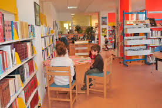

Votre bibliothèque
Les résidants du quartier peuvent s'abonner à notre bibliothèque. Les usagers doivent observer les règlements spécifiques de la bibliothèque.
Collections
Près de 10300 documents et 280 abonnements à des périodiques, sont regroupés à l'intérieur de nombreuses collections : ouvrages scientifiques, encyclopédies, romans, livres-cassettes, livres parlants, CD-ROM, enregistrements sonores, bandes dessinées, jeux éducatifs, affiches, publications gouvernementales, cours de langues, revues, journaux, etc.
Activités du mois d'avril
Activités culturelles
11 avril 2015 de 15h à 17h
Projection du film The king’s speech de Tom Hooper
Pour un roi, souvent invité à prononcer des discours à la nation, le bégaiement est évidemment un énorme handicap. Le film raconte l’histoire vraie de Georges V, qui a dû, presque à contrecœur (à cause de son handicap) accepter le trône d’Angleterre.
26 avril 2015 de 15h à 17h
Projection du film Four Weddings and a Funeral de Mike Newell
Four Weddings and a Funeral n’est pas très difficile et vous pouvez le suivre assez facilement. Les thèmes du film le rendent approprié pour étudier le vocabulaire lié à l’amour, au mariage et à la vie quotidienne.
Devenez ami de notre bibliothèque
Pourquoi devenir membre?
Si vous avez la passion de la lecture, si vous croyez à l’importance du rôle éducatif, culturel et ludique de la bibliothèque, devenir membre de notre association vous permet de poser un geste concret de promotion de la lecture auprès de la population. Être membre vous donne plusieurs privilèges :
- Invitation à la soirée des Amis donnant le premier choix lors du solde annuel de livres
- Réduction de 15% sur les achats de livres aux libraires : …
- Invitation à l’inauguration du Salon du livre de Québec
- Invitation à des activités littéraires réservées exclusivement aux membres
- Abonnement au bulletin Info-ABQ
- Droit de vote à l’assemblée annuelle
Pour nous joindre
Les Amis de la bibliothèque de Québec
2456, rue Fraser
Québec (Québec) G3R 2S7
Tel: 418 567 234-5678
Pour vous inscrire, cliquez ici